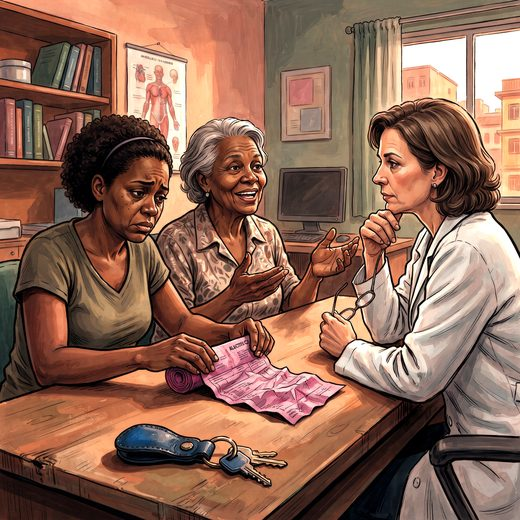

Consulta rápida à beira do leito
Condutas, doses e interações.
Referências da aula · 7
- American Psychiatric Association. Diagnostic and Statistical Manual of Mental Disorders, Fifth Edition, Text Revision (DSM-5-TR). Washington, DC: APA; 2022.
- Schilling LP, Balthazar MLF, Radanovic M, Forlenza OV, Silagi ML, Smid J, et al. Diagnóstico da doença de Alzheimer: recomendações do Departamento Científico de Neurologia Cognitiva e do Envelhecimento da Academia Brasileira de Neurologia. Dement Neuropsychol. 2022;16(3 Suppl 1):25-39. PMID 36533157. doi:10.1590/1980-5764-DN-2022-S102PT.PubMedDOI
- Folstein MF, Folstein SE, McHugh PR. “Mini-mental state”: a practical method for grading the cognitive state of patients for the clinician. J Psychiatr Res. 1975;12(3):189-98. PMID 1202204. doi:10.1016/0022-3956(75)90026-6.PubMedDOI
- Nasreddine ZS, Phillips NA, Bédirian V, et al. The Montreal Cognitive Assessment, MoCA: a brief screening tool for mild cognitive impairment. J Am Geriatr Soc. 2005;53(4):695-9. PMID 15817019. doi:10.1111/j.1532-5415.2005.53221.x.PubMedDOI
- Brucki SMD, Nitrini R, Caramelli P, Bertolucci PHF, Okamoto IH. Sugestões para o uso do mini-exame do estado mental no Brasil. Arq Neuropsiquiatr. 2003;61(3B):777-81. PMID 14595482. doi:10.1590/s0004-282x2003000500014.PubMedDOI
- Harada CN, Natelson Love MC, Triebel KL. Normal cognitive aging. Clin Geriatr Med. 2013;29(4):737-52. PMID 24094294. doi:10.1016/j.cger.2013.07.002.PubMedDOI
- Serrano-Pozo A, Escott-Price V, Grinberg LT, et al. Alzheimer's disease. Lancet. 2026;407:2241-62. PMID 42208565. doi:10.1016/S0140-6736(26)00198-4.PubMedDOI
Documentos oficiais
Leis e publicações do Ministério da Saúde sobre o cuidado da pessoa idosa, de acesso livre.
Abrir os documentos